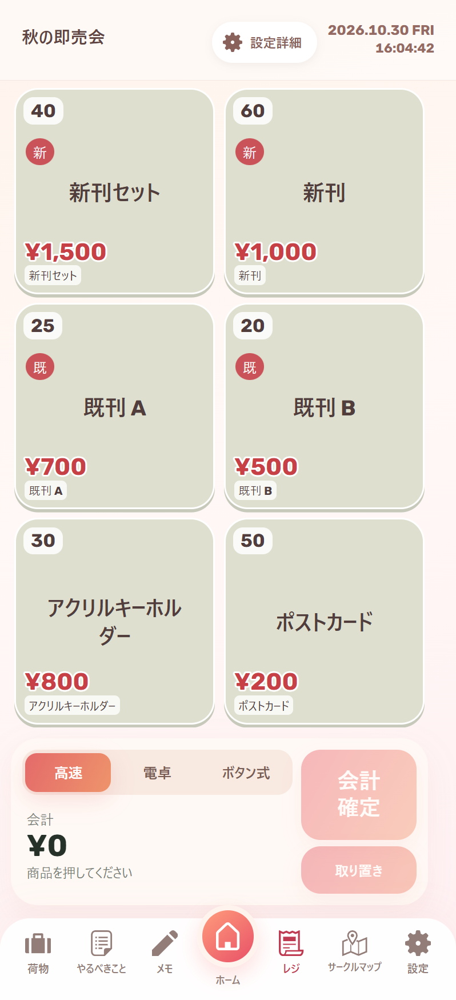
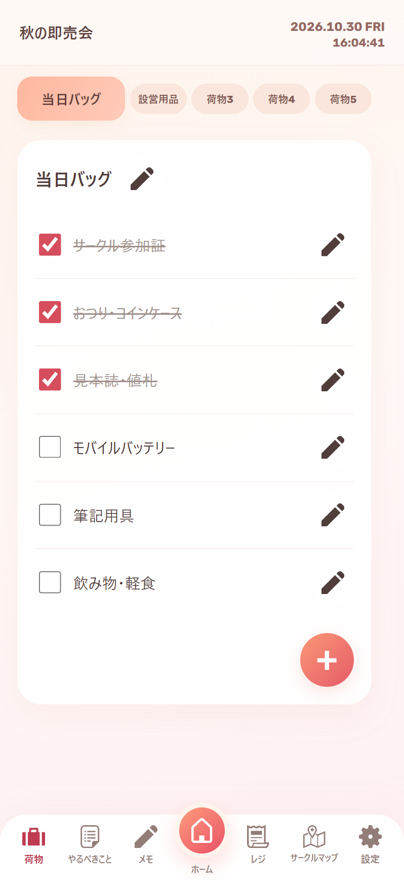

イベント別の記録
イベントごとに荷物・予定・レジ・メモを保存。「遠征」「近場」「空の状態」から、準備のひな形を選べます。
BESTIA WORKS / ANDROID APP
同人イベントの準備と当日の記録を、
イベントごとに管理。
荷造り、やること、レジ・在庫、サークルマップ、メモをひとつに。記録は端末内に保存し、通常の操作はオフラインで使えます。
Version 0.1.9約3 MB2026.10.30 更新
APKを開いてインストールします。更新手順はこちら。

SCREENS
タブを切り替えて、各画面を確認できます。
PACKING
用意したものをチェック。項目を長押しして並べ替え、表示されたゴミ箱にドラッグして削除できます。
画面例は架空のイベント・頒布物・会場図を使用しています。収録作品の画像や利用者の記録は掲載していません。

画像を押すと、大きく表示FEATURES
用途ごとに整理した、主な機能です。
イベントごとに荷物・予定・レジ・メモを保存。「遠征」「近場」「空の状態」から、準備のひな形を選べます。
バッグ別の持ち物チェック、項目の追加・編集・並べ替え。やることリストとタイムラインで予定も確認できます。
頒布物と価格を登録して会計を記録。在庫や売上を管理し、レジデータはファイルで受け渡しできます。
画像・PDFを登録。自分のスペースを丸枠で指定し、チェックしたサークルや折り畳める一覧を重ねて表示します。
設営、買い物、当日の連絡事項などをイベントごとに保存。カードから追加・編集・削除できます。
記録は端末内に保存。全体バックアップの書き出し・復元に対応し、イベントごとの保存量の目安も表示します。
GET STARTED
Android 8.0以上。現在は公開テスト版です。
初めて使う
このページのダウンロードボタンから保存します。
必要な場合はAndroidの「この提供元のアプリを許可」を設定します。
同梱データを選ぶか、イベントを新規作成して始めます。
すでに使っている
設定から保存し、端末外にも保管しておくと安心です。
最新版の確認・APK取得・検証から、更新画面まで進みます。
アンインストールせず、上書き更新してください。
このページからAPKを保存して開き、一度だけ手動で上書き更新してください。対応版へ更新した後はアプリ内の更新ボタンを使えます。
イベント・売上・メモ・画像は端末内に保存します。アカウント登録やクラウド同期はありません。通常の操作はオフラインで利用できます。
更新の確認・取得時はGitHubへ接続します。出典リンクは外部ブラウザーで開きます。利用者の記録をサーバーへ送信しません。
アプリの削除・データ消去では記録も消えるため、その前にバックアップを保存してください。
日本語・英語・韓国語・簡体字・繁体字に対応。入力した名前やメモはそのまま保持します。
公開配布はAndroid版APKです。ここで掲載しているPC上の画面例は表示確認用です。現在、このページでiOS版やPC版は配布していません。
GitHub Issuesへ、端末名・Androidバージョン・アプリの版・再現手順を添えてお知らせください。売上や個人情報を含むバックアップは公開しないでください。
DOWNLOAD
Version 0.1.9 / 公開テスト版
画像同梱のため約3 MB。Android 8.0以上。